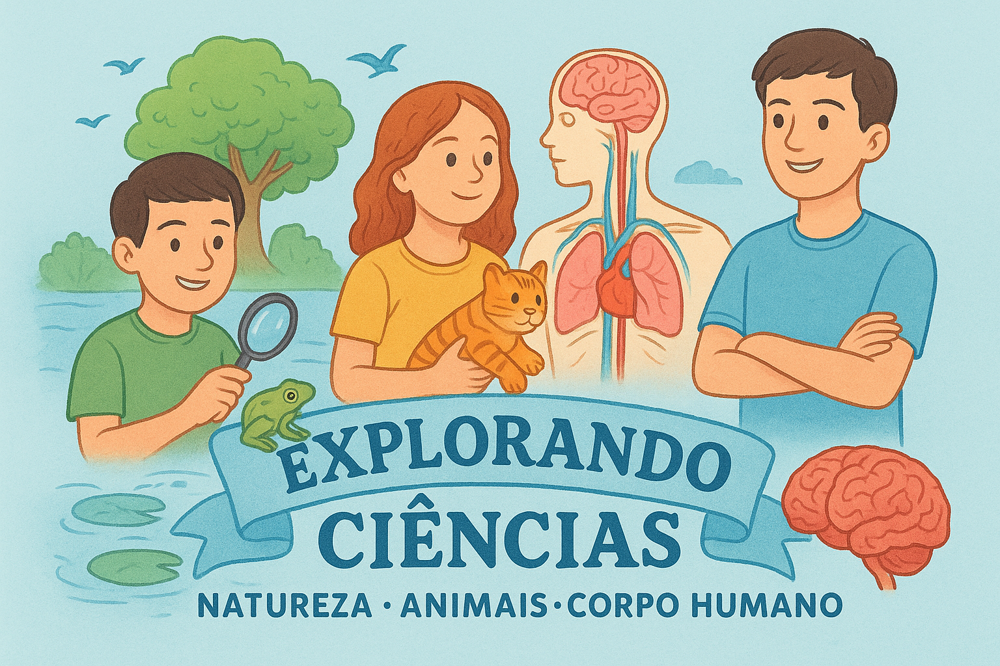
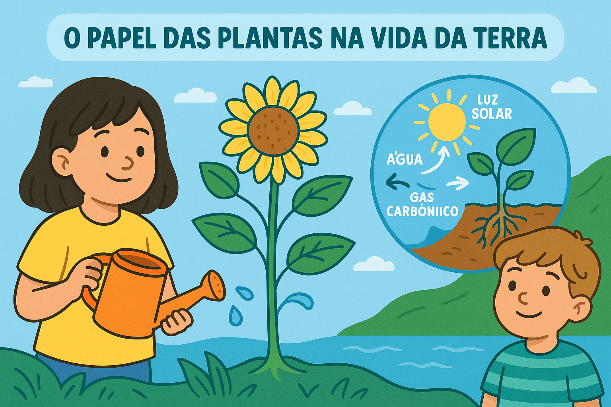
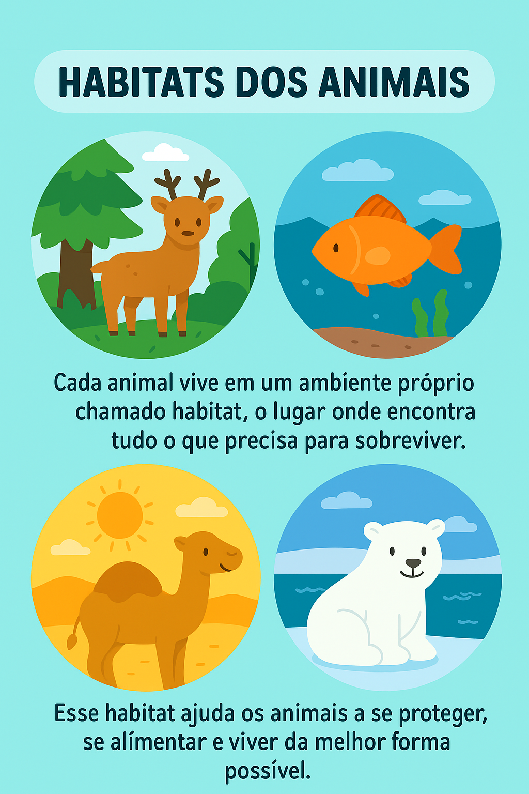
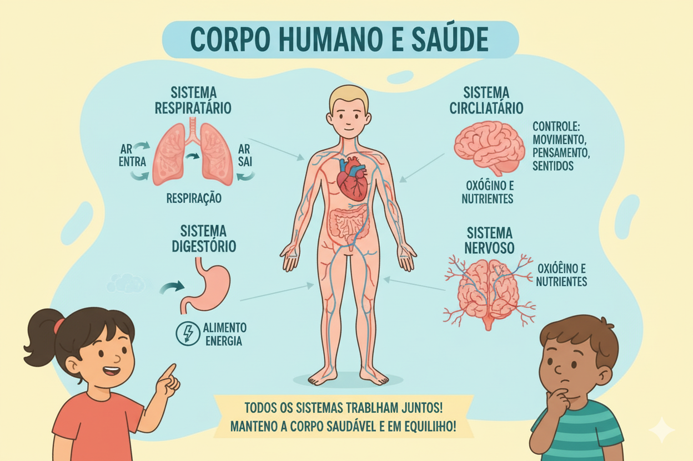
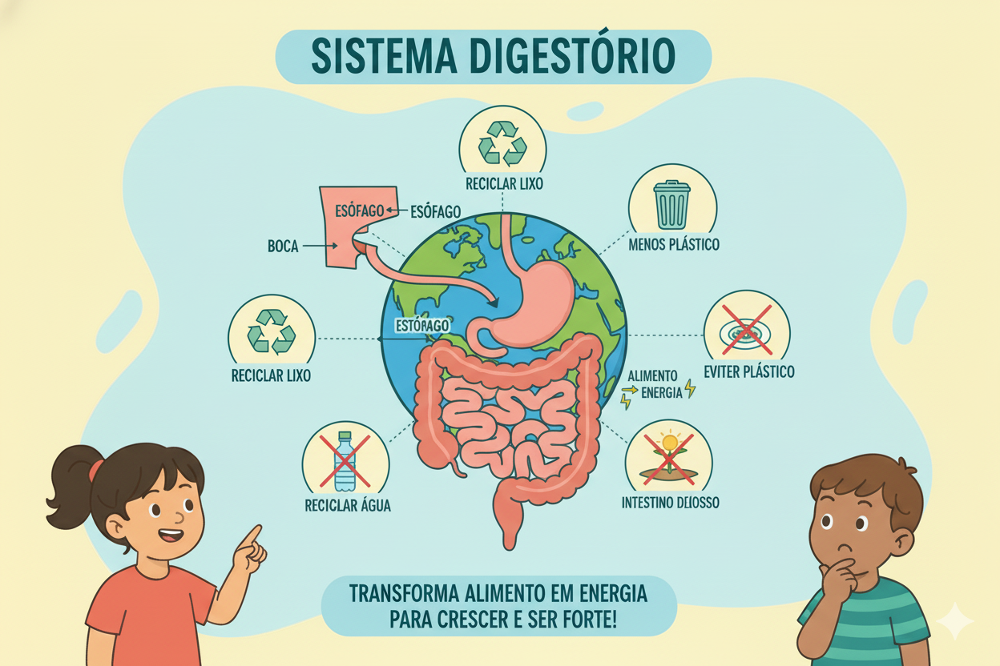
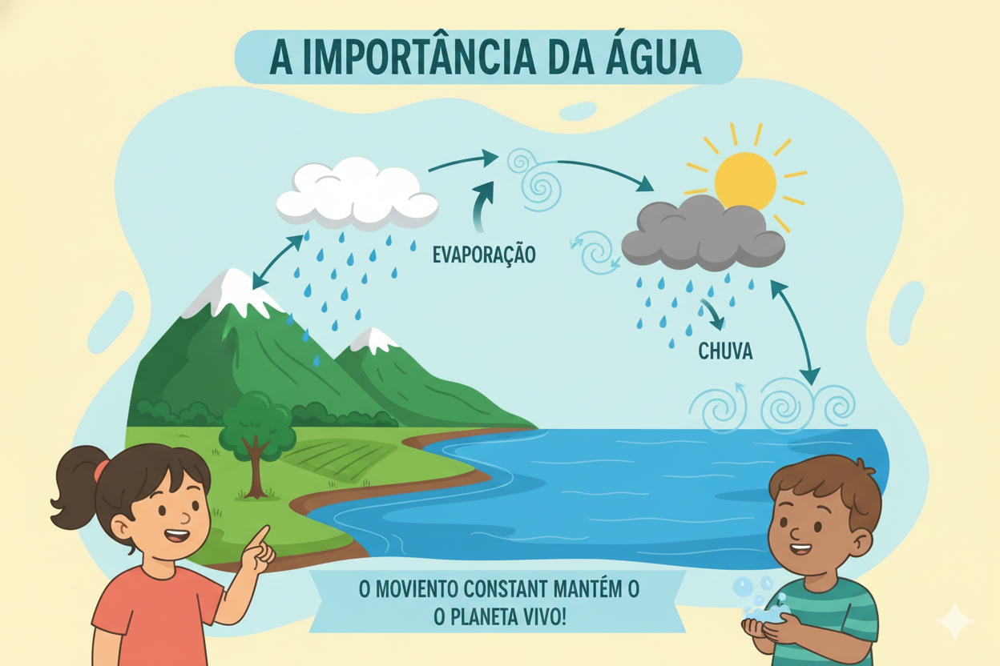
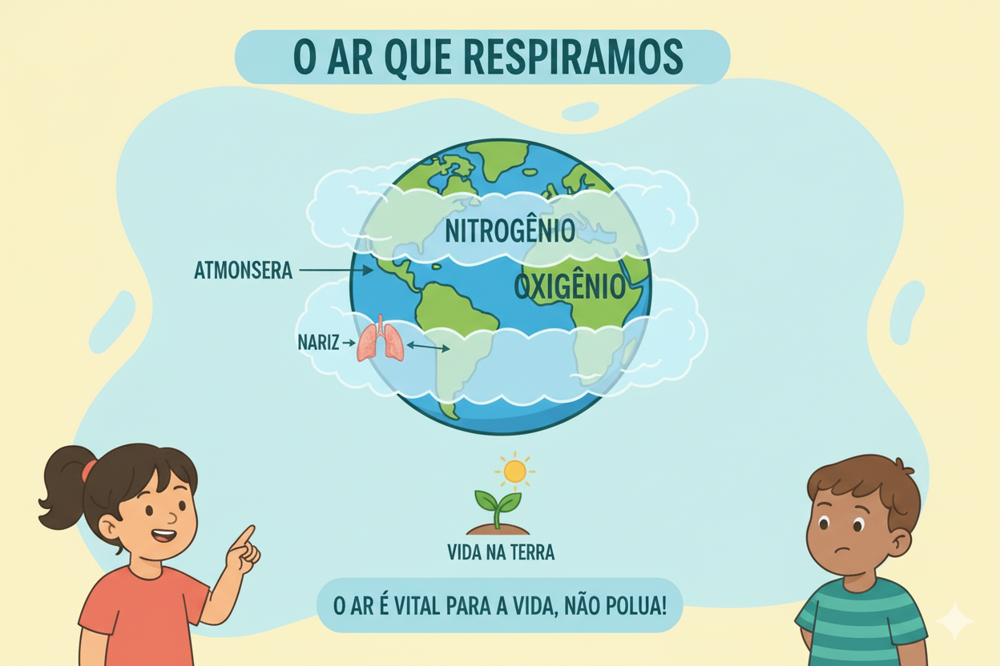
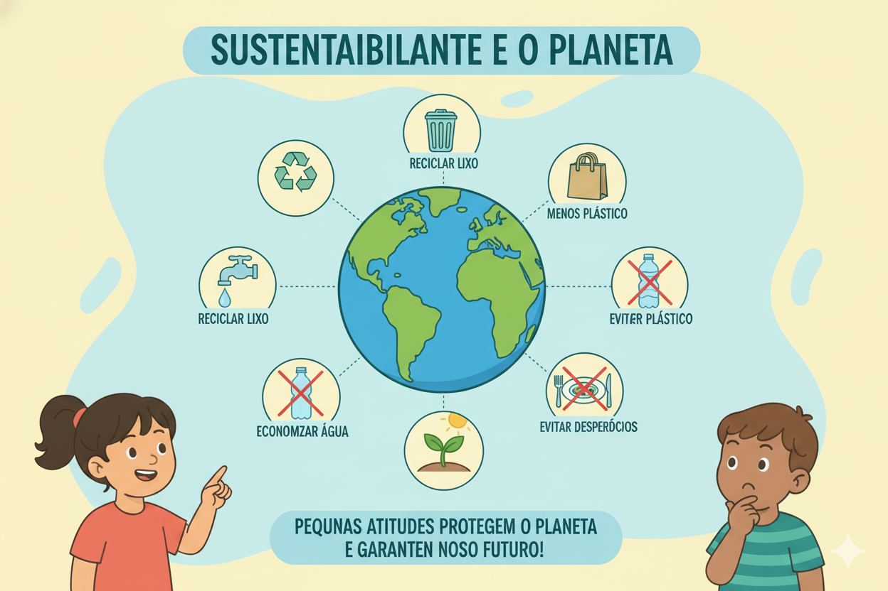

🔬 Ciências: O Mundo ao Nosso Redor
Escolha um módulo para descobrir os segredos da natureza, do corpo humano e do universo!
Módulo 1: Seres Vivos e Ambiente
🎯 Objetivo: Compreender o que são seres vivos, suas características principais e como eles interagem com o ambiente em que vivem. O aluno deve reconhecer que cada organismo depende do meio para sobreviver, desenvolvendo a noção de que todos fazem parte de um grande sistema equilibrado – o ambiente.
Bem-vindo(a)!
Olá! Aqui você vai revisar os principais temas de Ciências de forma leve e divertida. Vamos explorar o mundo da natureza, dos animais e do corpo humano?
Seres Vivos e Ambiente

Seres vivos são todos os organismos que têm vida, como plantas, animais, fungos, bactérias e seres humanos. Eles nascem, crescem, precisam de alimento, água, ar e de um ambiente adequado para sobreviver. Cada um tem seu jeito de viver: as plantas produzem seu próprio alimento, os animais dependem de outros seres vivos, e os fungos ajudam a decompor restos da natureza. Todos fazem parte de um grande equilíbrio e precisam do ambiente e dos cuidados que temos com ele, para continuar existindo.
Plantas e sua importância
As plantas têm um papel essencial na vida do planeta. Além de servirem de alimento para muitos animais incluindo nós, elas produzem o oxigênio que respiramos. Isso acontece por meio da fotossíntese, um processo em que as plantas usam a luz do sol, a água e o gás carbônico do ar para produzir energia e crescer. Enquanto fazem isso, devolvem oxigênio para a atmosfera, ajudando a manter o ar limpo e equilibrado. Por isso, cuidar das plantas é também cuidar da vida na Terra.
Animais e seus habitats
Cada animal vive em um ambiente próprio chamado habitat, o lugar onde encontra tudo o que precisa para sobreviver. Esse habitat pode ser uma floresta cheia de árvores, um rio de água doce, o fundo do mar, o calor do deserto ou até regiões de gelo. Cada espécie é adaptada ao seu ambiente: peixes respiram na água, camelos suportam altas temperaturas e ursos polares vivem no frio intenso. Assim, cada habitat ajuda os animais a se proteger, se alimentar e viver da melhor forma possível.
Exemplo:
Como os seres vivos dependem do ambiente Imagine uma floresta: nela vivem plantas, animais, fungos e diversos microrganismos. As plantas usam a luz do sol para produzir seu alimento e servir de comida para muitos animais. Os animais, por sua vez, ajudam a espalhar sementes, polinizar flores e manter o equilíbrio da natureza. Os fungos e bactérias decompõem folhas e troncos caídos, devolvendo nutrientes ao solo. Se um desses elementos faltar — como a água, o sol ou certos animais — todo o ambiente pode se desequilibrar. Por isso, cada ser vivo depende do outro e do ambiente para sobreviver.
Função:
O que aprendemos sobre os seres vivos e o ambiente A função deste conteúdo é ajudar o aluno a compreender que todos os seres vivos fazem parte de um grande sistema interligado chamado ambiente. Cada organismo tem uma função importante:
- Plantas produzem alimento e liberam oxigênio;
- Animais ajudam a manter o equilíbrio da natureza, seja polinizando, espalhando sementes ou controlando populações de outros seres;
- Fungos e bactérias reciclam a matéria, devolvendo nutrientes ao solo.
Módulo 2: Corpo Humano e Saúde
🎯 Objetivo: Compreender como o corpo humano funciona e reconhecer a importância dos cuidados com a saúde para manter o bom funcionamento do organismo. O aluno deve identificar hábitos saudáveis e entender que todas as partes do corpo trabalham juntas para garantir nossas atividades do dia a dia, como respirar, se mover, sentir, pensar e se alimentar.
Corpo Humano e Saúde
O corpo humano é formado por vários sistemas que trabalham juntos para manter tudo funcionando. O sistema respiratório cuida da nossa respiração, o digestório transforma os alimentos em energia, o circulatório leva oxigênio e nutrientes para todas as partes do corpo, e o nervoso controla nossos movimentos, pensamentos e sensações. Cada sistema tem sua função, mas todos dependem uns dos outros para manter o corpo saudável e em equilíbrio.
Sistema respiratório

O sistema respiratório é o responsável por levar o ar para dentro do nosso corpo. Quando respiramos, o oxigênio entra pelo nariz ou pela boca, chega até os pulmões e, de lá, passa para o sangue, que distribui esse oxigênio para todas as partes do corpo. É ele que garante que todas as células recebam o ar necessário para funcionar bem.
Sistema digestório
O sistema digestório é o responsável por transformar os alimentos em energia para o nosso corpo. Quando comemos, o alimento passa por vários órgãos como: boca, estômago e intestinos, onde é mastigado, quebrado e aproveitado. Assim, o corpo consegue usar os nutrientes para crescer, se fortalecer e manter todas as funções funcionando bem
Exemplo:
Como os sistemas do corpo humano trabalham juntos Imagine que você está correndo no pátio da escola. Enquanto você se movimenta, vários sistemas do seu corpo trabalham ao mesmo tempo:
- O sistema respiratório aumenta o ritmo da respiração para trazer mais oxigênio.
- O sistema circulatório leva esse oxigênio para os músculos, que precisam dele para continuar se movendo.
- O sistema digestório usa a energia dos alimentos que você comeu para dar força ao seu corpo.
- O sistema nervoso coordena seus passos, mantém o equilíbrio e envia comandos para que suas pernas continuem correndo.
Função: O que aprendemos sobre o corpo humano e a saúde A função deste conteúdo é ajudar o aluno a compreender que o corpo humano é formado por vários sistemas que trabalham juntos e dependem uns dos outros para manter o organismo funcionando bem. Cada sistema tem uma função essencial: o respiratório traz o oxigênio, o digestório transforma os alimentos em energia, o circulatório distribui nutrientes e o nervoso coordena as ações do nosso corpo. Ao entender como esses sistemas atuam em conjunto, o aluno percebe a importância de cuidar da saúde por meio de bons hábitos, como uma alimentação equilibrada, prática de atividades físicas, sono adequado e higiene pessoal. Esses cuidados mantêm cada sistema funcionando corretamente, garantindo equilíbrio, bem-estar e qualidade de vida.
Módulo 3: Água, Ar e Sustentabilidade
🎯 Objetivo: Compreender a importância da água e do ar para a vida no planeta e reconhecer como nossas ações podem afetar a qualidade desses recursos. O aluno deve desenvolver a consciência de que cuidar da natureza, evitar desperdícios e adotar atitudes sustentáveis é fundamental para manter o ambiente saudável para todos os seres vivos, hoje e no futuro.
Água, Ar e Sustentabilidade
A importância da água
A água é essencial para a vida de todos os seres vivos. Ela está presente nos rios, mares, lagos, no subsolo e até no ar, em forma de vapor. No ciclo da água, ela evapora com o calor do sol, forma nuvens e depois volta para a Terra em forma de chuva, mantendo rios e plantas vivos. Esse movimento constante garante que sempre exista água circulando pelo planeta, por isso é tão importante usá-la com cuidado e evitar desperdícios.
O ar que respiramos
O ar que respiramos faz parte da atmosfera, a camada que envolve a Terra e nos protege. Ele é composto principalmente por nitrogênio e oxigênio, e é esse oxigênio que permite nossa respiração e mantém todos os seres vivos funcionando. Sem a atmosfera e sem esse ar equilibrado, a vida no planeta não seria possível. Por isso, cuidar do ar e evitar poluição é tão importante para nossa saúde e para a natureza.
Sustentabilidade e o planeta
Sustentabilidade é o cuidado que temos com o planeta para garantir um futuro melhor para todos. Pequenas atitudes, como reciclar o lixo, economizar água, usar menos plástico e evitar desperdícios, ajudam a proteger a natureza e mantêm os recursos do planeta por mais tempo. Quando cada pessoa faz sua parte, o ambiente fica mais saudável e a vida no planeta se torna mais equilibrada.
Exemplo:
Como nossas atitudes ajudam a cuidar da água, do ar e do planeta Imagine uma escola onde todos os alunos adotam pequenas atitudes sustentáveis no dia a dia. Na hora de lavar as mãos, eles fecham a torneira enquanto ensaboam para evitar desperdício de água. Nos recreios, eles colocam o lixo no lugar certo, separando papel, plástico e restos de alimentos, ajudando na reciclagem. As salas são bem ventiladas, com janelas abertas para manter o ar limpo, e os professores incentivam todos a evitar queimar lixo ou jogar resíduos no chão. Com essas pequenas ações, a escola se torna um ambiente mais saudável. A água é usada de forma consciente, o ar fica mais limpo e o espaço se mantém organizado. Esse exemplo mostra que atitudes simples do dia a dia podem transformar o ambiente e contribuir para um planeta mais sustentável.
Função: O que aprendemos sobre a água, o ar e a sustentabilidade A função deste conteúdo é ajudar o aluno a compreender que a água e o ar são recursos fundamentais para a vida no planeta e que precisam ser cuidados para garantir a saúde dos seres vivos e o equilíbrio do ambiente. Ao aprender como a água circula pelo planeta, como o ar compõe a atmosfera e como atitudes sustentáveis podem preservar esses recursos, o aluno desenvolve responsabilidade ambiental e entende que pequenas ações fazem grande diferença. Esse conhecimento incentiva hábitos conscientes, como economizar água, reduzir o uso de plástico, reciclar o lixo e evitar práticas que poluem o ar. Quando o aluno reconhece a importância desses recursos e aprende a cuidar deles, ele contribui para um planeta mais saudável, equilibrado e sustentável para as gerações presentes e futuras.
🎉 PARABÉNS! MÓDULO FINALIZADO! 🎉
Você completou a Aventura de Ciências! Que conquista incrível!
Ver Mais Cursos e Aventuras →